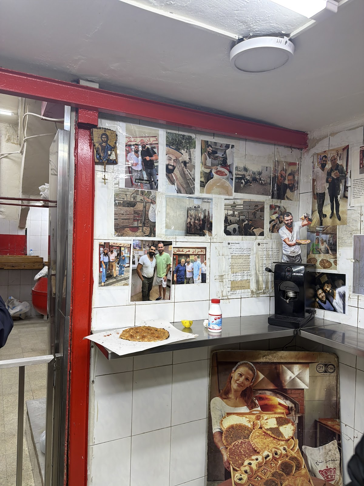
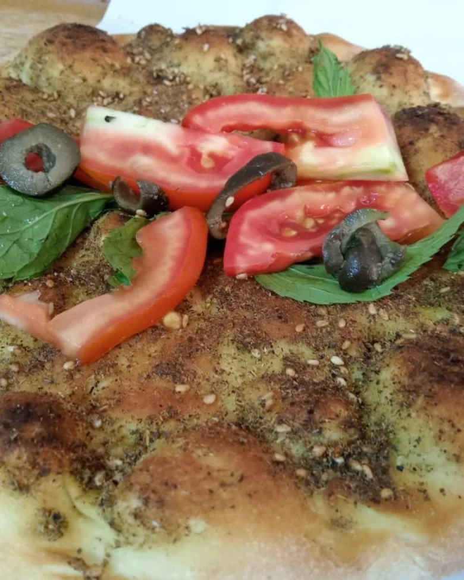
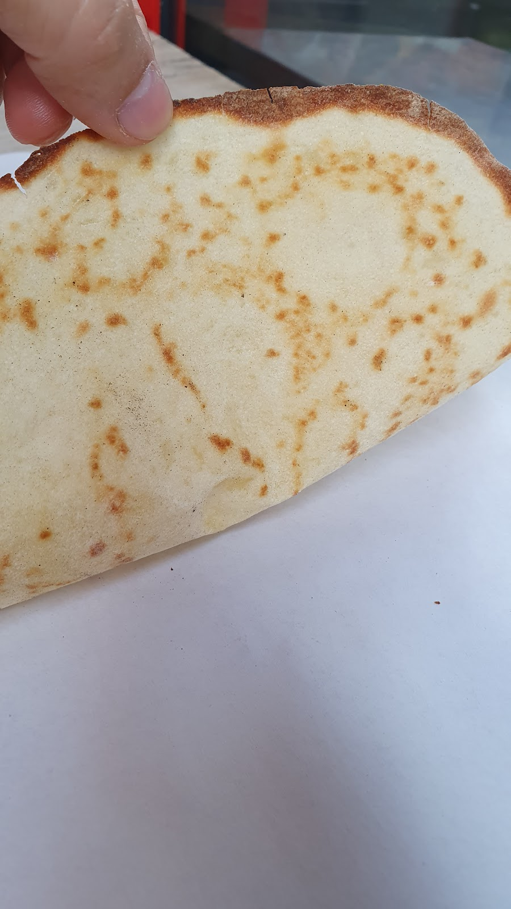

Afran Maraach أفران معراش







One of the best authentic bakeries in Beirut! Their dough is incredibly thin and perfectly crispy, and you can really taste the quality of the ingredients in every bite.Daan
One of the best furn mana2ish in Lebanon a must have lahem b ajen there and all the rest try and repeat then try again then repeat.Mike Gadban
Maraach Street, Bourj Hammoud, Lebanon
+961 70 454 534